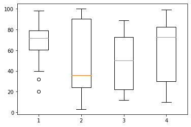
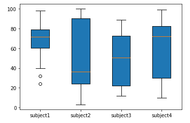
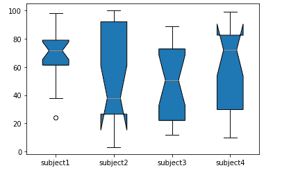

Matplotlib 盒子图-boxplot()函数
原文：https://www.studytonight.com/matplotlib/matplotlib-box-plot-boxplot-function
在本教程中，我们将介绍盒子图以及使用boxplot()功能在 matplotlib 库中创建盒子图。
matplotlib 中的箱折线图主要用于显示一组数据的摘要，这些数据具有最小值、第一个四分位数、中值、第三个四分位数和最大值等属性。
方框图也被称为触须图。
在方框图中，方框是从第一个四分位数到第三个四分位数创建的，在中间位置也有一条垂直线穿过方框。
在箱折线图中， x 轴表示要绘制的数据，而 y 轴表示频率分布。
创建方框图
matplotlib 库中的盒子图通常是借助boxplot()功能创建的。
在箱折线图中
numpy.random.normal()用于创建一些随机数据，它以平均值、标准偏差和所需的数值数作为参数。为
ax.boxplot()方法提供的数据值可以是 Numpy 数组或 Python 列表，也可以是数组元组
boxplot()函数所需的语法如下:
matplotlib.pyplot.boxplot(data, notch, vert, patch_artist, widths)
以下是该函数的参数:
数据
该参数表示绘制所需的阵列或阵列序列。
槽口
这是一个可选的参数，接受布尔值。将其
None设为默认值。绿色
这是一个可选参数，接受布尔值，即水平图为假，垂直图为真。
patch_artist
这是一个可选参数，其布尔值以
None作为其默认值宽度
这是一个可选参数，接受一个数组，用于设置盒子的宽度。默认值为
None。
现在我们将深入研究一些创建 Box 图的例子。
创建方框图示例:
在 Matplotlib 库中创建简单方框图的代码如下:
import matplotlib.pyplot as plt
value1 = [84,77,20,40,67,62,75,78,71,32,98,89,78,67,72,82,87,66,56,52]
value2=[62,5,91,25,35,32,96,99,3,90,95,34,27,55,100,15,71,11,37,21]
value3=[23,89,12,78,72,89,25,69,68,86,19,48,15,16,16,75,65,31,25,52]
value4=[59,73,73,16,81,61,88,98,10,87,29,72,16,23,72,88,78,99,75,30]
box_plot_data=[value1,value2,value3,value4]
plt.boxplot(box_plot_data)
plt.show()
以下是输出:

创建带有填充和标签的方框图:
在下面给出的代码片段中，我们将为箱折线图提供一个标签，并将填充箱折线图。让我们看看示例的代码:
import matplotlib.pyplot as plt
value1 = [82,76,24,40,67,62,75,78,71,32,98,89,78,67,72,82,87,66,56,52]
value2=[62,5,91,25,36,32,96,95,3,90,95,32,27,55,100,15,71,11,37,21]
value3=[23,89,12,78,72,89,25,69,68,86,19,49,15,16,16,75,65,31,25,52]
value4=[59,73,70,16,81,61,88,98,10,87,29,72,16,23,72,88,78,99,75,30]
box_plot_data=[value1,value2,value3,value4]
plt.boxplot(box_plot_data,patch_artist=True,labels=['subject1','subject2','subject3','subject4'])
plt.show()
以下是输出:

创建带凹口的方框图:
在这个例子中，我们将绘制一个有凹口的方框图。
import matplotlib.pyplot as plt
value1 = [84,76,24,46,67,62,78,78,71,38,98,89,78,69,72,82,87,68,56,59]
value2=[62,5,91,25,39,32,96,99,3,98,95,32,27,55,100,15,71,11,37,29]
value3=[23,89,12,78,72,89,25,69,68,86,19,49,15,16,16,75,65,31,25,52]
value4=[59,73,70,16,81,61,88,98,10,87,29,72,16,23,72,88,78,99,75,30]
box_plot_data=[value1,value2,value3,value4]
plt.boxplot(box_plot_data,notch='True',patch_artist=True,labels=['subject1','subject2','subject3','subject4'])
plt.show()
以下是输出:

时间就是活生生的例子！
在这个实时示例中，我们将绘制一个具有不同颜色的水平方框图。
代码说明
在上例中，
boxplot()函数接受参数 vert=0 ，因为我们想要绘制水平方框图。上例中的
colors数组将占用四种不同的颜色，并借助patch.set_facecolor()功能传递给箱折线图的四个不同的盒子。